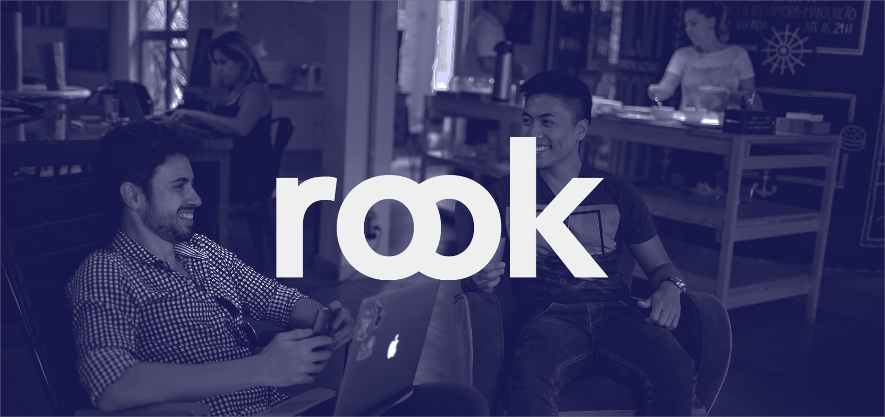

Context
I made this project during the "Weekend de Dave". We had 56 hours to build a start-up with a team of 7 people (project manager, lawyer, engineer marketers and myself (visual and interface designer))
The product
Rook is a coworking service. We reach companies, particulars or café and offer them an income for their unused areas. We provide these empty rooms to students or startups looking for places to work.
Challenges
Rook targets different type of targets and each one has various expactations about rook. The brand Identity and the website features had to work for all of these targets.
We also had to team up with strangers in a short amount of time
Solution
During the UX process, I kept asking myself "is it efficient for each personas?". For instance, I worked a lot on our filters system. The calendar needed to allow user to select a 2 hours time slot, but also 2 years.
Branding
Define brand
Targets
Our customers are looking for the perfect place to work. Some of them want calm and quiet atmosphere in order to work. Others are looking for open spaces towards working in group.
We have companies looking for a 1 year room just for them. But we also have students looking for a 2 hours spot only.
So there is a wide range of targets but all of them are linked because they share our values.
Values
- share
- improve
- innovate
- initiate
- launch
- go fot it
Find a name
List of words that defines our service :
place / room / area / find / where
work / focus / think / study
Create a logo
We connect people
rook makes the link between companies that provides rooms (green O) and customers looking for places to work (blue O). This graphic also stands for teamwork : a large part of our audience will use our rooms to work as a group
This relation is symbolised by the two circles
Grow your projects
Fully lowercase (rook and not Rook) was a better solution for us because :
- easy to read
- visually better lines
- growth / improve
- increase vs hectic

Interface
1. Define content and features

2. Hierarchy, user and brand goals
Homepage user goals
- What is the service ?
- Why is it better than the rivalry
3. Paper wireframes
4. Design in Adobe Xd